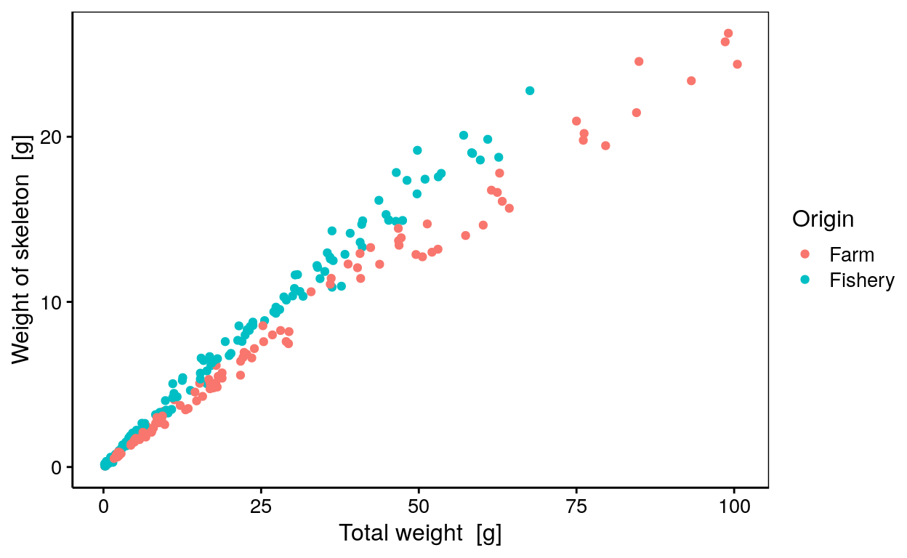
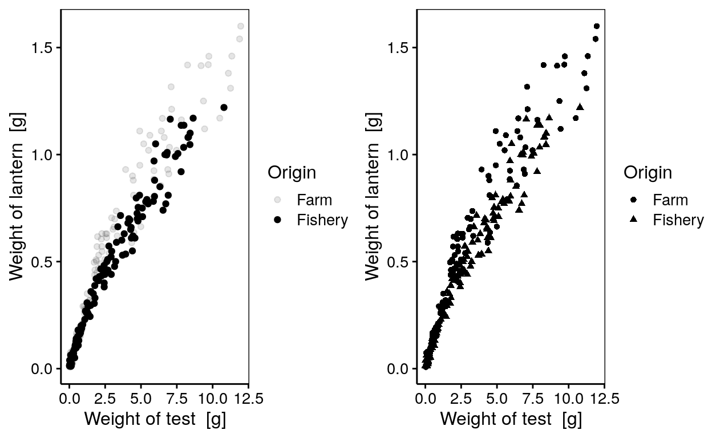
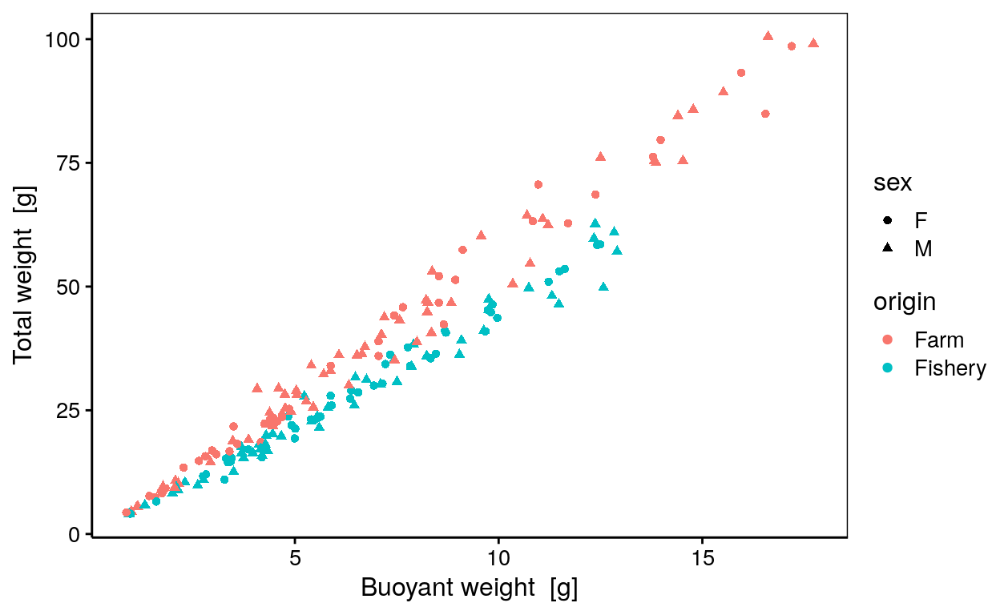
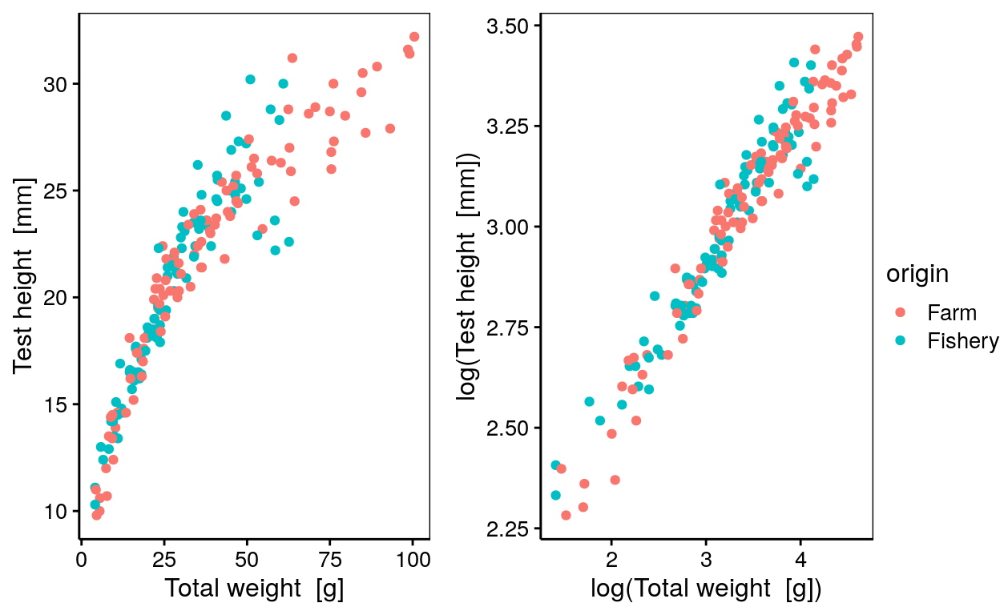

Science des données biologiques I
Réalisé par le service d'Écologie numérique, Université de Mons (Belgique)Objectifs
Ce tutoriel interactif a pour objectif de vous apprendre à réaliser des graphiques de type nuage de points comme montré sur la figure ci-dessous.
Variation de la masse du squelette en fonction de la masse totale de Paracentrotus lividus Lamarck 1816
Introduction
Le nuage de points permet de représenter une variable numérique en fonction d’une autre variable numérique. On peut exprimer cette relation dans R sous la forme de \[y \sim x\] que l’on peut lire : \[y \ en \ fonction \ de \ x\]
Points essentiels d’un nuage de points
Les instructions de base afin de produire un nuage de points sont :
# Importation du jeu de données
urchin <- read("urchin_bio", package = "data.io")
# Réalisation du graphique
chart(urchin, formula = height ~ weight) +
geom_point()Retour sur la vidéo
Commencez par réaliser rapidement les graphiques vus durant la capsule vidéo.
Exercice 1
Le jeu de données urchin_bio portant sur la biométrie d’oursins est assigné à urchin. Les variables employées pour ce premier graphique sont la masse du squelette (skeleton) et la masse totale (weight).
Warning: Removed 163 rows containing missing values (geom_point).Réalisez un nuage de points montrant la masse du squelette en ordonnée et la masse totale en abscisse afin d’obtenir le graphique ci-dessus (un encadré Code R est une zone où vous pouvez vous-même entrer des instructions R et/ou les modifier. Les numéros à gauche sont les numéros de lignes. Ils ne font pas partie des instructions. Utilisez le bouton Run Code pour tester, et ensuite Submit Answer quand vous êtes satisfait de ce votre réponse).
Complétez la zone de code R en remplaçant les ___ par les variables demandées.
chart(___, formula = ___ ~ ___) +
geom_point()chart(DF, formula = NUM ~ NUM) +
geom_point()chart(urchin, formula = NUM ~ NUM) +
geom_point()
#### Attention : solution dans le 'hint' suivant! ####chart(urchin, formula = skeleton ~ weight) +
geom_point()Exercice 2
Le jeu de données assigné à urchin contient des valeurs manquantes comme le précise le message suivant lors de la réalisation du graphique précédent.
Warning message: Removed 163 rows containing missing values (geom_point).
Ajoutez l’argument na.rm = TRUE dans la fonction geom_point() afin de préciser que les variables du jeu de données contiennent des valeurs manquantes.
Réalisez un nuage de points montrant le masse du squelette (skeleton) en ordonnée et le masse totale (weight) en abscisse.
Complétez la zone de code R en remplaçant ___ par les variables demandées. Précisez qu’il y a des valeurs manquantes (na.rm = TRUE).
chart(___, formula = ___ ~ ___) +
geom_point(___)chart(DF, formula = NUM ~ NUM) +
geom_point(___)chart(urchin, formula = skeleton ~ weight) +
geom_point(___)
# Dans la fonction `geom_point()`, il est possible d'employer l'argument `na.rm =` afin de préciser qu'il y a des valeurs manquantes.
#### Attention : solution dans le 'hint' suivant! ####chart(urchin, formula = skeleton ~ weight) +
geom_point(na.rm = TRUE)
# Dans la fonction `geom_point()`, il est possible d'employer l'argument `na.rm =` afin de préciser qu'il y a des valeurs manquantes (`na.rm = TRUE`). Exercice 3
Vous souhaitez visualiser la différence d’origine des oursins mesurés. Ces informations se situent dans la variable sur l’origine (origin). L’utilisation de la couleur peut permettre de différencier ces derniers.
La formule de la fonction chart() peut être complétée avec l’argument faisant référence à la couleur (%col=%).

Réalisez un nuage de points montrant la masse du squelette en ordonnée et la masse en abscisse. Utilisez la couleur afin de différencier l’origine des individus et précisez à nouveau qu’il y a des valeurs manquantes.
Complétez la zone de code R en remplaçant ___ par les variables demandées. Précisez qu’il y a des valeurs manquantes (na.rm = TRUE).
chart(___, formula = ___ ~ ___ ___ ___) +
geom_point(___)chart(DF, formula = YNUM ~ XNUM %col=% FACTOR) +
geom_point(___)
#### Attention : solution dans le 'hint' suivant! ####chart(urchin, formula = skeleton ~ weight %col=% origin) +
geom_point(na.rm = TRUE)Exercices sur le nuage de points
Maintenant que vous avez rapidement réalisé les graphiques vus durant la vidéo, expérimentez d’autres fonctions et arguments liés à la réalisation d’un nuage de points.
Exercice 1
La couleur n’est pas forcément l’argument le plus judicieux à employer pour différencier une variable facteur au sein d’un nuage de points. Il vous sera parfois demandé d’employer des formes (%shape=%) ou encore l’opacité (%alpha=%) que vous devez ajouter à la formule de la fonction chart().
Warning: Using alpha for a discrete variable is not advised.
A noter : Nous pouvons observer que l’utilisation de la forme n’est pas forcément l’argument le plus judicieux dans cet exemple.
Intéressez-vous à la masse de la lanterne d’aristote (lantern) en fonction de la masse du test (test).
Réalisez un nuage de points montrant le masse de la lanterne d’Aristote (lantern) en ordonnée et la masse du test (test) en abscisse. Utilisez l‘opacité (%alpha=%) afin de différencier l’origine des individus (origin). Précisez à nouveau qu’il y a des valeurs manquantes (na.rm = TRUE).
chart(___, formula = ___ ~ ___ ___ ___) +
geom_point(___)chart(DF, formula = YNUM ~ XNUM %alpha=% FACTOR) +
geom_point(___)
#### Attention : solution dans le 'hint' suivant! ####chart(urchin, formula = lantern ~ test %alpha=% origin) +
geom_point(na.rm = TRUE)Exercice 2
Intéressez-vous maintenant à la masse (weight) des individus en fonction de leur masse immergée (buoyant_weight).
Vous pouvez avoir le souhait d’employer 2 variables facteurs pour obtenir un graphique plus informatif. La variable portant sur le sexe des individus (sex) peut être employée.

Réalisez un nuage de points montrant la masse en ordonnée et la masse immergée en abscisse. Utilisez la couleur afin de différencier l’origine des individus et différentes formes afin de différencier le sexe des individus. Précisez à nouveau qu’il y a des valeurs manquantes.
Vous pouvez observer qu’une première ligne de code vous est fournies afin de retirer les lignes de tableau ne contenant pas l’information sur le sex des individus. Vous apprendrez dans les prochains cours à manipuler vos jeux de données.
urchin <- dplyr::filter(urchin, sex != "NA")
chart(___, formula = ___ ~ ___ ___ ___ ___ ___) +
geom_point(___)urchin <- dplyr::filter(urchin, sex != "NA")
chart(___, formula = ___ ~ ___ %col=% ___ %shape=% ___) +
geom_point(___)urchin <- dplyr::filter(urchin, sex != "NA")
chart(DF, formula = YNUM ~ XNUM %col=% FACTOR1 %shape=% FACTOR2) +
geom_point(___)
#### Attention : solution dans le 'hint' suivant! ####urchin <- dplyr::filter(urchin, sex != "NA")
chart(urchin, formula = weight ~ buoyant_weight %col=% origin %shape=% sex) +
geom_point(na.rm = TRUE)Exercice 3
Intéressez-vous maintenant à la hauteur (height) en fonction de la masse (weight) des individus.

Réalisez un nuage de points montrant le logarithme de la masse en ordonnée et le logarithme de la masse immergée en abscisse. Utilisez la couleur afin de différencier l’origine des individus et précisez à nouveau qu’il y a des valeurs manquantes.
chart(___, formula = ___ ~ ___ ___ ___) +
geom_point(___)chart(DF, formula = ___ ~ ___ %col=% ___) +
geom_point(___)chart(urchin, formula = YNUM ~ XNUM %col=% FACTOR) +
geom_point(___)chart(urchin, formula = log(YNUM) ~ log(XNUM) %col=% FACTOR) +
geom_point(___)
#### Attention : solution dans le 'hint' suivant! ####chart(urchin, formula = log(height) ~ log(weight) %col=% origin) +
geom_point(na.rm = TRUE)Conclusion
Bravo! Vous venez de terminer cette séance d’exercices dans un tutoriel “learnr”.
Durant cette séance, vous avez appris à :
- Effectuer des graphiques de type nuage de point